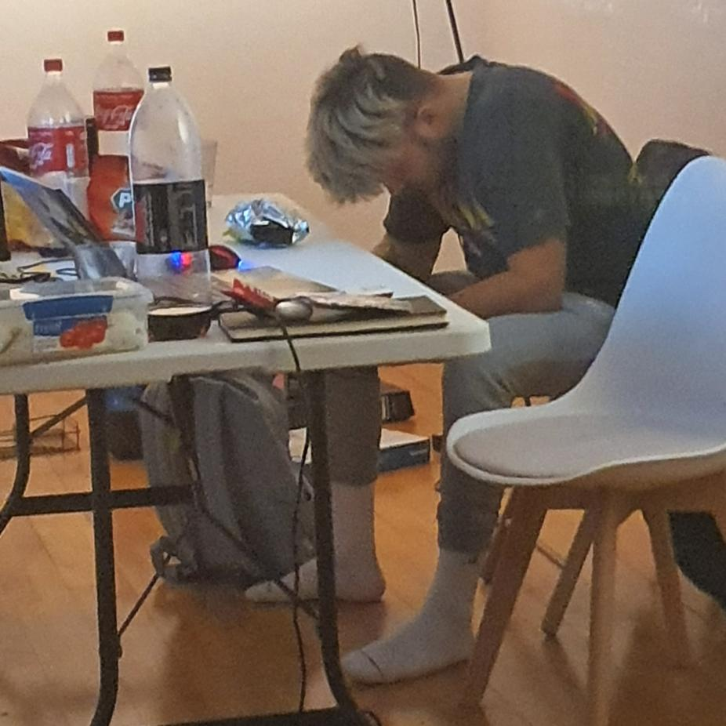
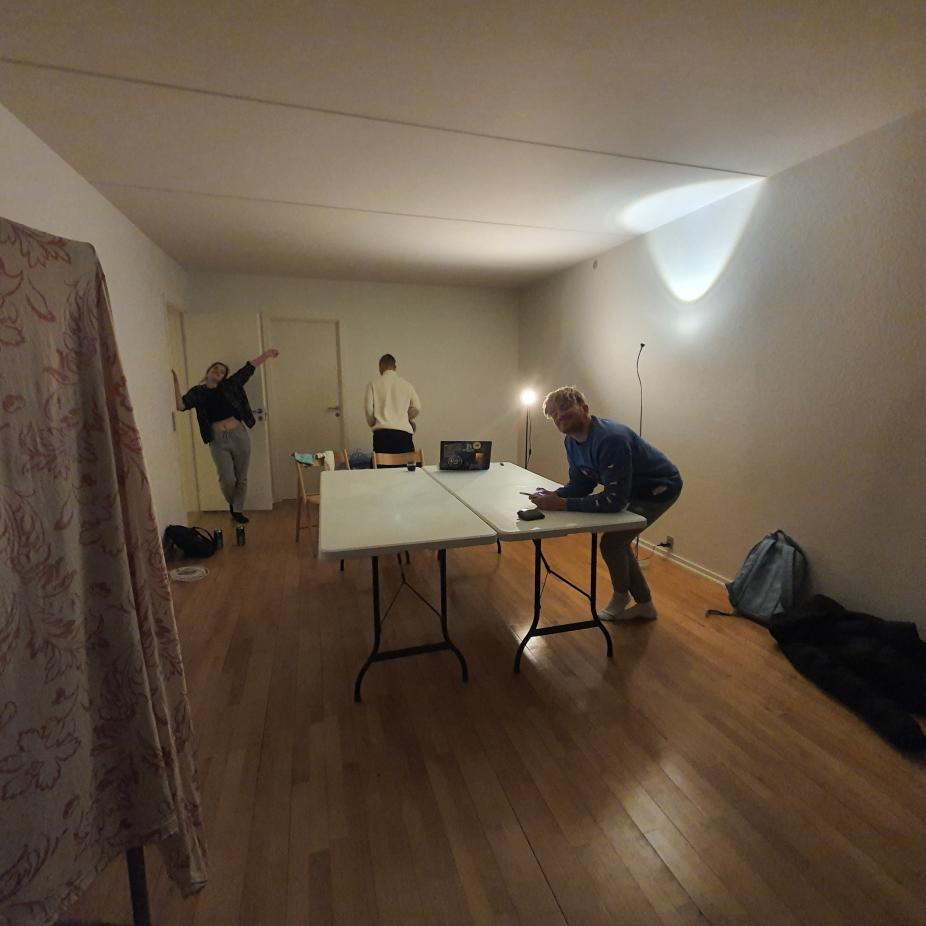
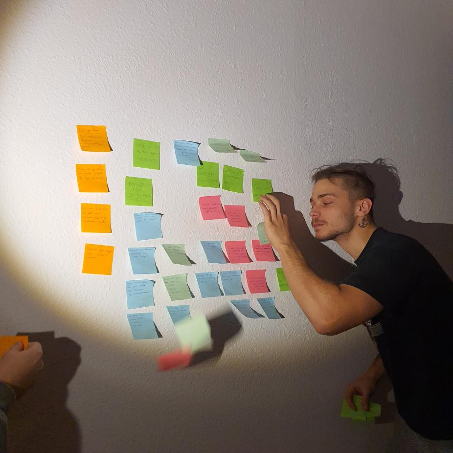

-

Seaware Foundation
Saving the seas since 2020.
-

About us
Read about our team and how we started
We are dedicated to spread the awareness and bring light to the true problem at hand and provide you the next best way to get involved and help to make a change. Founded in 2020, by 4 students, this project went a long way from idea to actual product. When these 4 students started it was from simple idea to find something to educate people about the sea/ocean to finding the true problem that little people know about and when these students learned about sunken ships and the problems world might face soon if it is not taken care of it became their passion.
This passion lead to creation of Seaware Foundation - place to educate yourself and ways to find to make a change. From the creators of Seaware Foundation, we hope you find this as interesting as we did and that our message reached your heart! If you have any questions please do not hesitate to reach out to us!
Founded in 2020, by 4 students, this project went a long way from idea to actual product. When these 4 students started it was from simple idea to find something to educate people about the sea/ocean to finding the true problem that little people know about and when these students learned about sunken ships and the problems world might face soon if it is not taken care of it became their passion. This passion lead to creation of Seaware Foundation - a place to educate yourself and ways to find to make a change.
Pinterest seitan truffaut, craft beer tumblr DIY blue bottle ugh pitchfork post-ironic put a bird on it literally. Wolf craft beer pickled, beard humblebrag XOXO blue bottle. Pop-up chillwave meggings green juice. Cliche four loko health goth vegan. Master cleanse PBR&B hella bitters. Distillery kitsch man bun, direct trade tofu street art offal PBR&B selfies iPhone fanny pack austin raw denim stumptown vice. Craft beer four dollar toast scenester, heirloom twee fashion axe celiac affogato.
Flexitarian pickled cardigan humblebrag. Crucifix fingerstache four dollar toast actually, austin meggings church-key. Normcore jean shorts DIY, ennui post-ironic franzen brooklyn sriracha green juice health goth bicycle rights hammock chartreuse farm-to-table authentic. Bitters actually tousled, etsy ennui DIY keffiyeh skateboard sartorial williamsburg church-key cray cliche. Etsy YOLO waistcoat, four dollar toast lomo salvia poutine pork belly seitan thundercats gastropub tattooed bespoke franzen plaid. Tote bag readymade waistcoat meh. Actually keffiyeh street art jean shorts, pabst crucifix 90's blog microdosing selvage gluten-free.
From the creators of Seaware Foundation, we hope you find this as interesting as we did and that our message reached your heart! If you have any questions please do not hesitate to reach out to us!
